Information architecture, user journeys and responsive wireframes¶
Issue: #56
This document defines the navigation structure, the main user journeys, and low-fidelity responsive wireframes for Stat'sTheGame. It covers presentation and flow only; it does not change the access model, the event/statistic domain, or the API contract, and it must stay consistent with the approved brand and interface guidelines. Wireframes are intentionally low-fidelity (structure and content, not final visual styling) so the team can review flow and states before detailed page implementation begins.
1. Scope and audiences¶
Four audiences use the same application, distinguished by app_user.application_role and,
for submitters, submitter_competition_scope (see
Roles and permissions):
| Audience | Sign-in required | Role |
|---|---|---|
| Public visitor | No | Unauthenticated |
| Signed-in viewer | Yes | viewer (default for any new account) |
| Approved submitter | Yes | submitter, scoped to specific competitions |
| Administrator | Yes | admin |
The frontend may use role/scope to decide what to show, but — consistent with the security boundary in the roles document — frontend visibility is never the security boundary; every wireframe below assumes the backend re-checks role and scope on every request.
2. Information architecture¶
2.1 Site map¶
All routes below exist today in apps/frontend/src/App.tsx. Public browsing routes require no
session; /submissions/new requires submitter/admin; /admin/users requires admin.
flowchart TD
Home["/ — Landing"]
subgraph Public["Public browsing (no sign-in)"]
Competitions["/competitions"] --> CompetitionDetail["/competitions/:id"]
Seasons["/seasons"] --> SeasonDetail["/seasons/:id"]
Fixtures["/fixtures"] --> FixtureDetail["/fixtures/:id"]
FixtureDetail --> FixtureStats["/fixtures/:id/statistics"]
FixtureStats --> FixtureStatDetail["/fixtures/:id/statistics/:statisticId"]
Competitors["/competitors"] --> CompetitorDetail["/competitors/:id"]
Participants["/participants"] --> ParticipantDetail["/participants/:id"]
end
subgraph Auth["Authentication"]
SignIn["/sign-in"] --> Callback["/auth/callback"]
Callback --> Account["/account"]
end
subgraph Submitter["Submitter (role: submitter/admin, in-scope)"]
Submit["/submissions/new"]
end
subgraph Admin["Administrator (role: admin)"]
AdminUsers["/admin/users"]
end
Home --> Competitions
Home --> Fixtures
Home --> Seasons
Home --> Competitors
Home --> Participants
Home --> SignIn
Account --> Submit
Account --> AdminUsers
NotFound["* — 404 Not Found"]2.2 Navigation rules¶
- The global header exposes the same public browsing links (Competitions, Seasons, Fixtures, Competitors, Participants) to every audience, signed in or not — public statistics must remain reachable without an account.
- The header shows Sign in for an unauthenticated visitor, and Account (leading to
/account) once authenticated. - Submit events appears in account-area navigation only for
submitter/adminroles, and only once the account's scope has been confirmed by the backend (the page itself still checks independently — see §3.3). - Manage users appears in account-area navigation only for
admin. - Deep links to any public detail page (
/fixtures/:id,/participants/:id, etc.) work directly, without first visiting the list page, since these are the URLs likely to be shared or indexed. - An unknown path, or a public ID that does not resolve, renders the shared 404 page rather than redirecting silently.
2.3 Content hierarchy per page type¶
| Page type | Hierarchy |
|---|---|
| List page (e.g. Fixtures) | Page title → filters → paginated card/row grid → pagination |
| Detail page (e.g. Fixture) | Breadcrumb → title/summary → tabs (Overview / Statistics / Squads / Timeline) → tab content |
| Form page (Submission) | Title → scope/help copy → single-column form → primary action → result region |
| Admin page | Title → one card per account → request state → scope controls → role-transition actions |
3. User journeys¶
3.1 Public visitor — browse fixtures, events and statistics without an account¶
Confirms the acceptance criterion that public fixture, event and statistic pages are reachable without sign-in.
flowchart LR
A[Land on Home] --> B[Open Fixtures]
B --> C{Filter by competition/season/team?}
C -- yes --> B
C -- no --> D[Open a fixture]
D --> E[View fixture Overview]
E --> F[Open Statistics tab]
F --> G[Open a statistic detail]
G --> H[Open a linked participant or competitor]- No step in this journey requires authentication; Sign in remains visible but is never forced.
- Every list and detail page independently handles its own loading, empty and error states (§4), since the visitor may deep-link directly into any page.
3.2 Signed-in viewer — request submitter access¶
flowchart LR
A[Sign in with Google] --> B[Land on /auth/callback]
B --> C[Redirected to /account]
C --> D[Request submitter access for a competition]
D --> E{Administrator decision}
E -- approved --> F[Role becomes submitter; scope assigned]
E -- rejected --> G[Stays viewer; may request again]- Authentication is Supabase Auth with Google OAuth (per System architecture); the frontend never assigns a role itself.
- A pending request is visible on the account page as "Pending review"; the account remains a
viewer— and therefore cannot submit — until an administrator approves it.
3.3 Approved submitter — submit delivery events for a fixture¶
flowchart LR
A[Open Submit events] --> B{Fixtures in scope?}
B -- none --> C[Empty state: no in-scope fixtures]
B -- some --> D[Select a fixture]
D --> E[Paste delivery events JSON]
E --> F[Submit]
F --> G{Backend validation}
G -- rejected --> H[Per-field validation errors shown; form retained]
G -- accepted --> I[Success panel; submission recorded]- The fixture list shown is only what the backend returns as in-scope for that account — the frontend does not compute scope itself.
- Final statistic totals are never entered directly; they are always derived from accepted events, consistent with the event-sourced design in the system architecture.
- On rejection, focus moves to the result heading and every field-level reason is listed, so the submitter can correct and resubmit without losing their pasted JSON.
3.4 Administrator — approve, reject or revoke submitter access¶
flowchart LR
A[Open Manage users] --> B[Find account with pending request]
B --> C[Select one or more competition scopes]
C --> D[Approve and assign scope]
D --> E[Role becomes submitter; scope saved]
B --> F[Reject pending request]
F --> G[Role stays viewer; may request again later]
H[Find approved submitter] --> I[Revoke]
I --> J[Role reverts to viewer; scope cleared]
H --> K[Change competition scope]
K --> L[Save scope changes]- Approval and scope assignment happen as one action; approval is blocked until at least one scope is selected (§4 validation states).
- Rejection, revocation and scope changes are separate, permitted only for the lifecycle states the backend allows (pending → approved/rejected; approved → revoked/rescoped) — an administrator cannot approve their own account or an already-admin account.
- Every transition is visible immediately in the account's card; no page reload is required.
4. States considered per page¶
Every list, detail, form and admin page in this document is designed against the same four states, shown as annotated strips beneath each wireframe in §5:
| State | Pattern used across pages |
|---|---|
| Loading | Skeleton/placeholder content in place, with a status-role announcement (e.g. "Loading fixture…", "Checking submission access") for assistive technology. |
| Empty | A specific, non-alarming message naming what is absent (e.g. "No published fixtures match the current filters.", "No in-scope fixtures.") rather than a generic blank page. |
| Validation | Errors surface next to the offending field where the field is identifiable, plus a summary region that receives focus (submission and admin-approval forms). |
| Error | An alert-role message distinct from "empty" (e.g. failed fetch vs. genuinely no data), with a retry action where the failure is retryable. Unresolvable public IDs render the shared 404 page rather than an error banner. |
5. Responsive wireframes¶
Wireframes are intentionally low-fidelity (structure, hierarchy and states — not final visual
styling, which is governed by the brand and interface guidelines). Desktop
frames are shown at a 1280px reference width; mobile frames at a 375px reference width. Source
SVGs are stored in docs/design/assets/wireframes/ and can be reopened and edited directly.
5.1 Home (public)¶
Landing page — static hero and principles content; no data fetch, so no loading state applies.
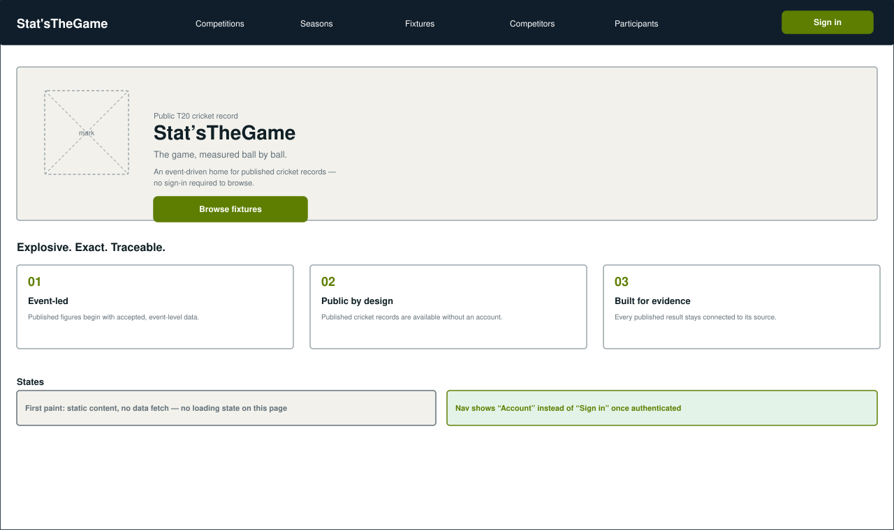
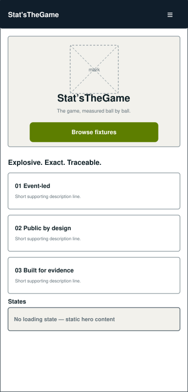
5.2 Fixtures (public list)¶
Filterable list of published fixtures. Available without sign-in.
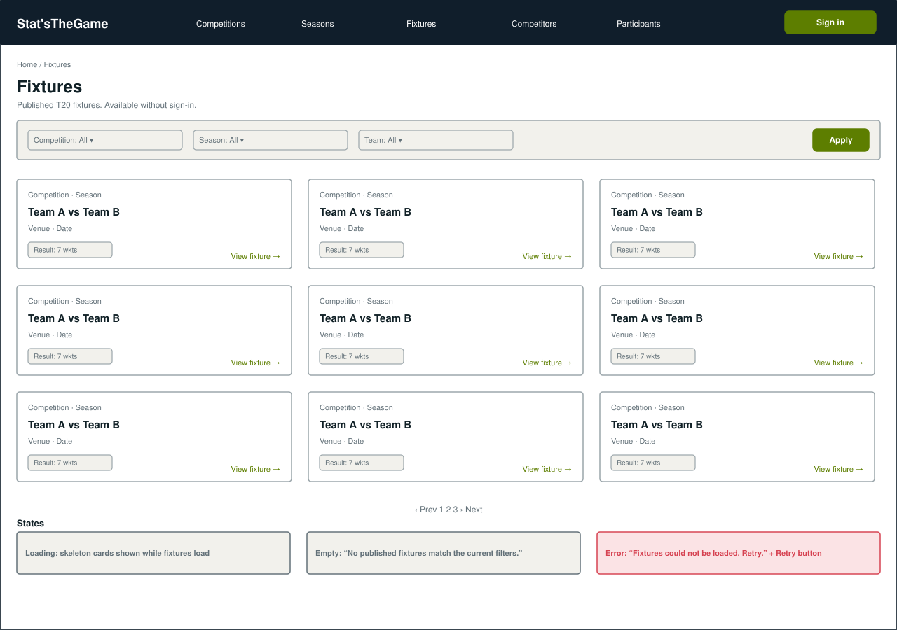
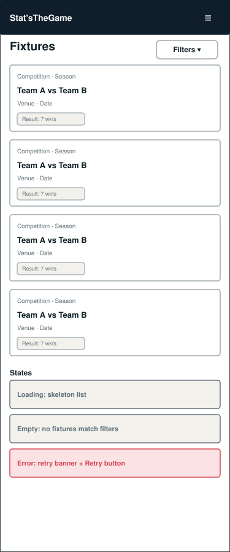
5.3 Fixture detail and statistics (public detail)¶
Tabbed detail page; the Statistics tab is what published event-derived statistics roll up into.
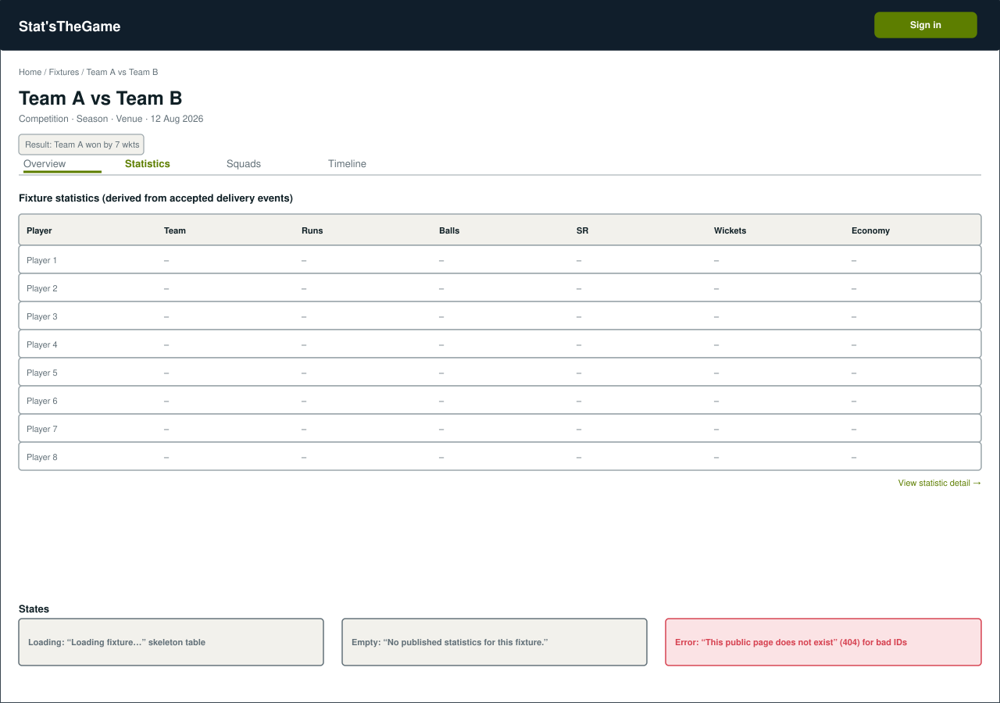
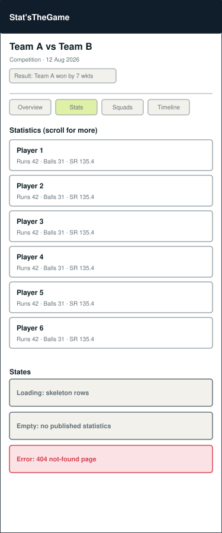
5.4 Sign in¶
Single sign-in method (Google, via Supabase Auth), reached from any page's header.
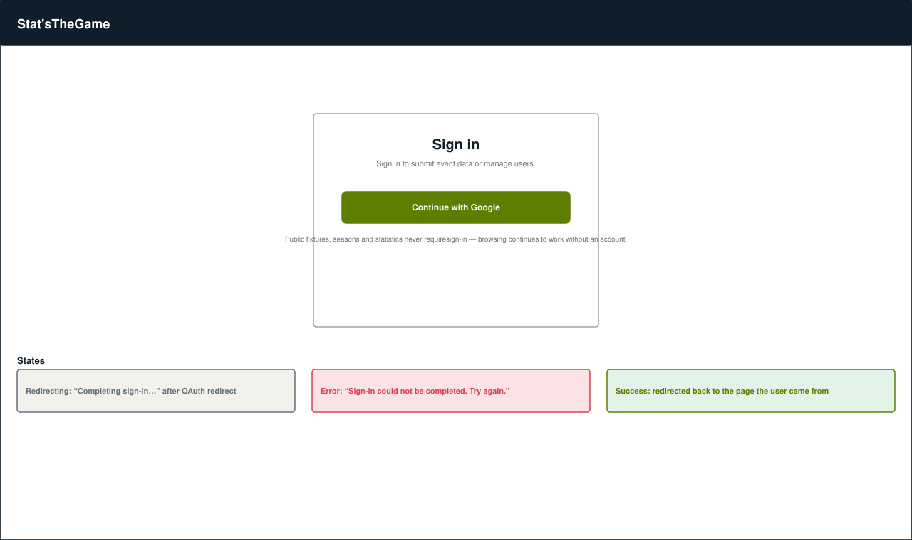
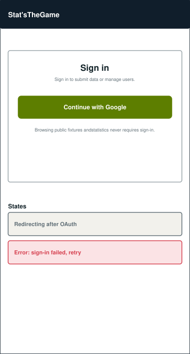
5.5 Submit delivery events (submitter)¶
Single-column form restricted to fixtures within the account's confirmed scope.
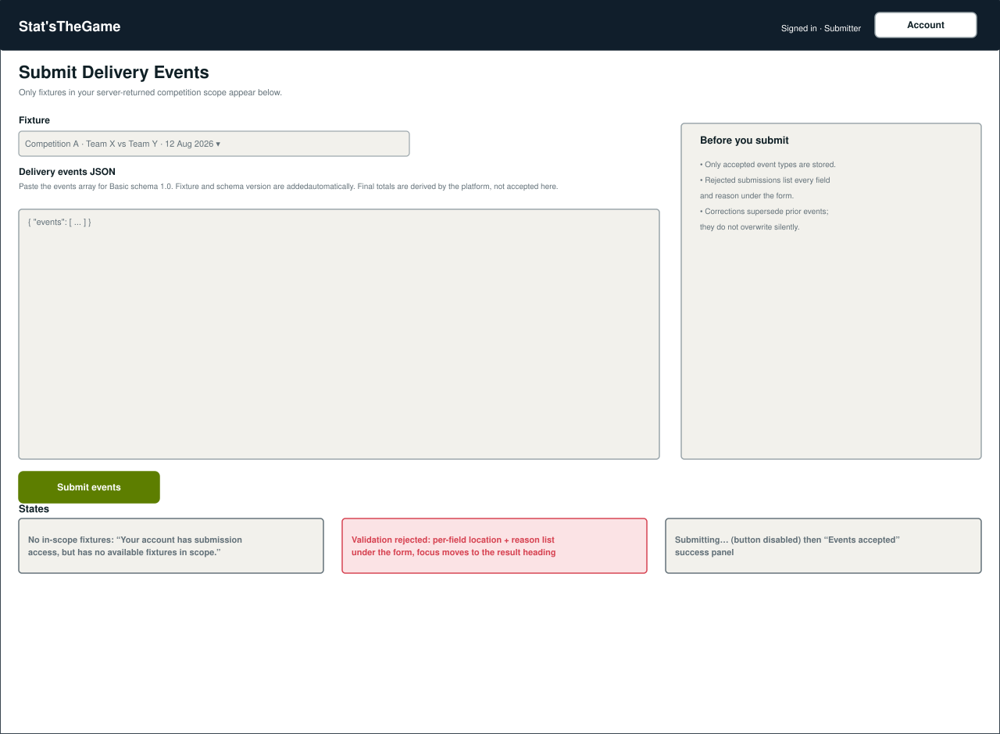
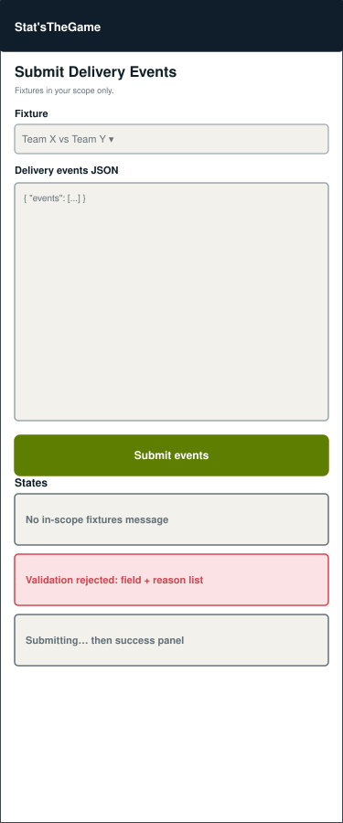
5.6 Manage users (administrator)¶
One card per account; scope selection and role-transition actions gated by current lifecycle state.
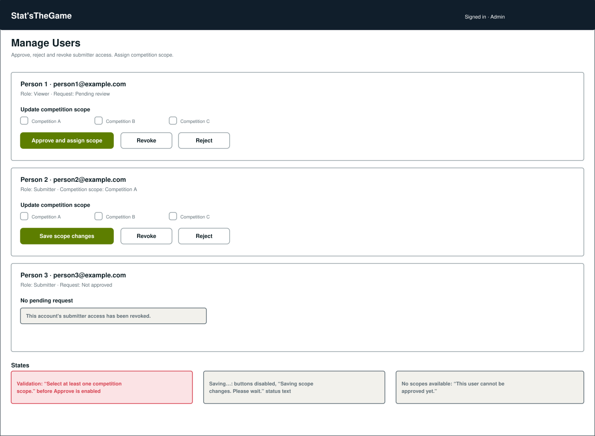
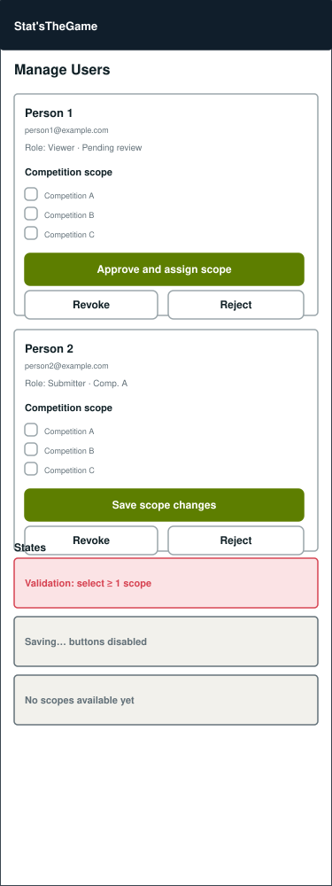
6. Open questions for review¶
- Should the public site expose a global search across fixtures/competitors/participants, or is filtered browsing on each list page sufficient for the current scope?
- Does the account page need a visible history of past submissions, or is that deferred to a later issue?
- Confirm pagination style (numbered pages vs. "load more") for large public lists before implementation.
7. Review and sign-off¶
| Reviewer | Decision | Date | Notes |
|---|---|---|---|
This document is merged through the Pull Request referenced by Closes #56, per the project's
git methodology. Detailed page implementation should not begin until this document has been
reviewed by the team, per the acceptance criteria on #56.